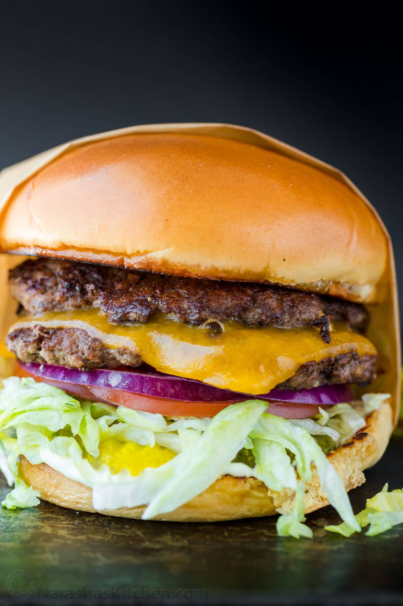

THE Smashburger

Description
Smash burgers are probably the most popular food item at the moment, and with good reason.
With two smashed patties and a rich, flavorful sauce, they might just be the best way to make burgers.
And while the mouthwatering pictures of smashburgers online might make them seem
difficult to make, they are actually quite easy to make! Give it a try with this easy-to-follow recipe!
Ingredients
Servings: 4 burgers
Smash Burger Patties:
- 1 1/2 lbs ground beef, 80/20, divided into 8 portions (3 oz each)
- Salt, for taste
- Black Pepper, for taste
- garlic powder, optional, for taste
- 4 slices medium cheddar cheese, we love thick-sliced
- Burger Sauce
Burger Sauce:
- 1/3 cup mayonnaise
- 1 tsp yellow mustard
Toppings:
- 4 burgers buns
- 2 cups iceberg lettuce, shredded
- 1 large tomato, sliced
- 1/2 red onion, sliced into thin rings
- 2 Dill Pickles, cut into 12 slices
Steps
Portion Beef Patties:
- Divide beef into 8 even portions, about 3 oz each. Loosely Roll them into balls then
cover and refrigerate while preparing remaining ingredients. The meat must be cold
when it hits the grill.
Prep Toppings and Buns:
- Remove wilted leaves from lettuce to keep it crunchy then finely shred lettuce.
Slice tomatoes, onions, and pickles.
- Butter and toast buns over medium heat until golden on the buttered side.
Cook the Patties:
- Increase griddle to medium/high heat. Place 2-4 burger balls onto hot griddle. Working
quickly, place parchment paper over the meat and firmly smash straight down into a thin patty.
- Once patties are smashed, peel back and discard parchment papers and season patties with
salt, pepper and garlic powder. Add 1/2 teaspoon of burger sauce. Cook 2 minutes on the first
side or until seared and juices start to come to the surface.
- Scrape under the burger with spatula facing down at a 45˚ angle to get under the
caramelized part and flip. Cook another 1 minute. Top half of the patties with sliced cheese and
cover cheese with the second patty. Repeat with remaining burgers and transfer them to a platter
as they finish cooking.
Assemble Burgers:
- Place sauce on bottom of bun. Top with 3 pickle slices, shredded lettuce, 2 tomato slices
and thin sliced onion. Add double patty and top with bun.